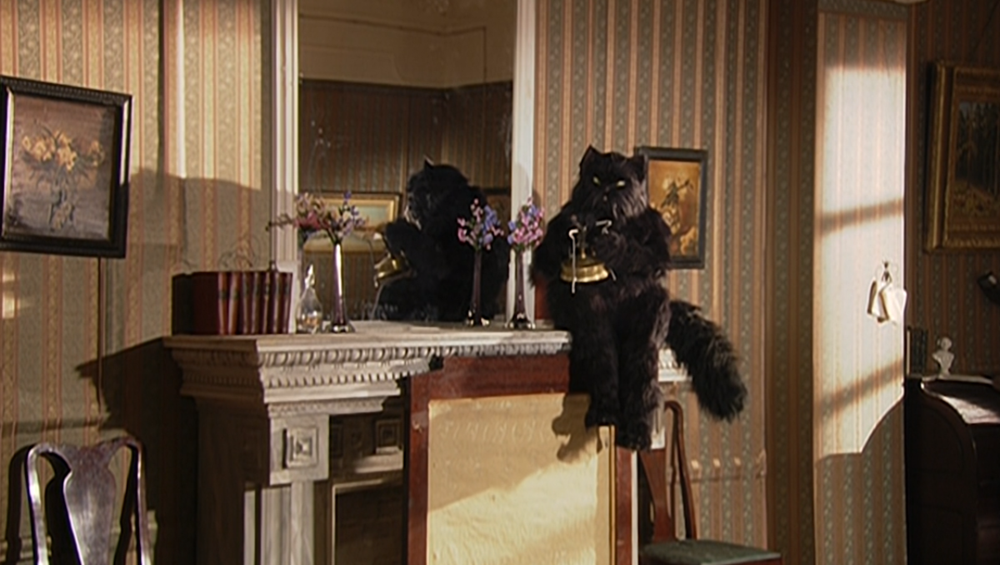
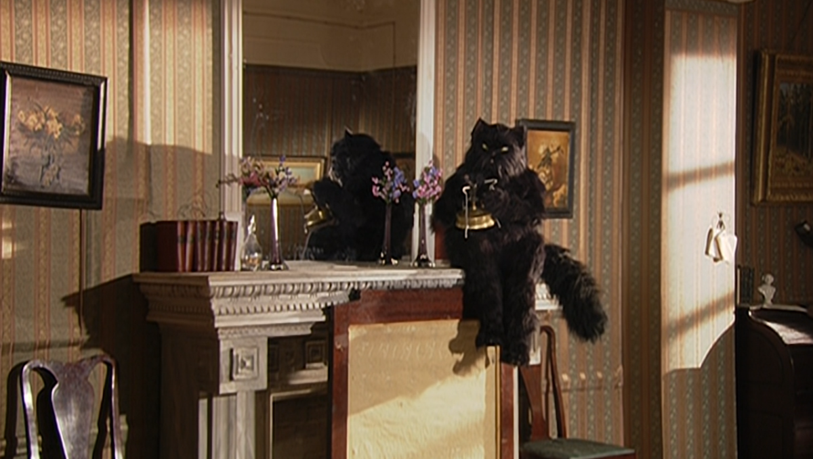

Описание
«Мастер и Маргарита» — это роман Михаила Булгакова,написанный в 1928-1940 годах, но опубликованный посмертно в 1966-1967 годах.
Это одно из самых известных произведений русской литературы XX века.Роман сочетает в себе элементы фантастики,
сатиры и философии, исследуя темы любви, власти, добра и зла.
Сюжет романа разворачивается на фоне двух основных линий:
одна из них рассказывает о визите дьявола в Москву 1930-х годов,
а другая — о любви Мастера, писателя, и Маргариты, его возлюбленной.
В произведении также присутствуют персонажи, такие как Воланд (дьявол),
Понтий Пилат и другие, которые добавляют глубину и многослойность
к повествованию.
 
